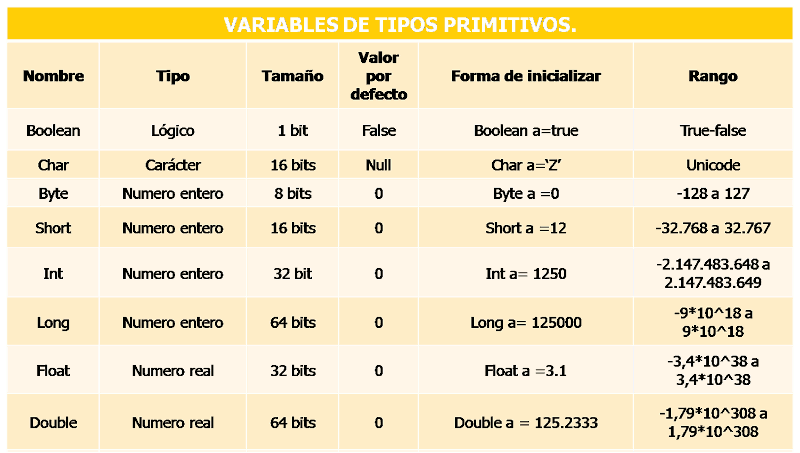
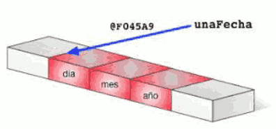

Tipos de datos
En un ordenador toda la información se almacena mediante los símbolos "0" y "1". Así, la siguiente secuencia de ceros y unos:
01000001
debe ser interpretada por el ordenador. Si la interpreta como un número entero, será el valor 65, si la interpreta como un carácter será la letra "A", si la interpreta como un valor real será 65.0. Así, aunque al final todo son ceros y unos dentro de la memoria de nuestro ordenador, es la forma de interpretarlos lo que marca la diferencia, tanto al almacenarlos como al recuperarlos.
Este es el motivo por el que los lenguajes de programación cuentan con el concepto de tipos de datos: se trata de distintas maneras de interpretar esos "ceros y unos" en función de ciertas configuraciones que establecen el espacio utilizado así como la representación aplicada para codificar y descodificar esa información.
En programación, un tipo de dato se refiere a una categoría o conjunto de valores que una variable o expresión puede tener. Cada tipo de datos se identifica por un nombre y es capaz de almacenar una determinada clase de información así como un rango de valores concreto.
Java cuenta con un pequeño conjunto de tipos de datos primitivos. Podríamos considerarlos fundamentales, ya que la mayor parte de los demás tipos(estructurados o complejos), son composiciones a partir de estos más básicos. Estos tipos de datos primitivos sirven para gestionar los tipos de información más básicos, como números de diversas clases o datos de tipo verdadero/falso (también conocidos como "valores booleanos" o simplemente "booleanos").

Tipos de datos primitivos
-
Lógico o Booleano
Solo existe un tipo, boolean, y tiene la finalidad de facilitar el trabajo con valores "verdadero/falso" resultantes, por regla general, de evaluar expresiones. Los dos valores posibles de este tipo son true y false (en minúsculas).
-
Numéricos enteros
En Java existen cuatro tipos destinados a almacenar números enteros. La única diferencia entre ellos es el número de bytes usados para su almacenamiento y, en consecuencia, el rango de valores que es posible representar con ellos. Todos ellos emplean una representación que permite el almacenamiento de números negativos y positivos. El nombre y características de estos tipos son los siguientes:
- byte: emplea un solo byte (8 bits) de almacenamiento. Esto permite almacenar valores en el rango [-128, 127].
- short: usa el doble de almacenamiento que el anterior, lo cual hace posible representar cualquier valor en el rango [-32.768, 32.767].
- int: emplea 4 bytes de almacenamiento y es el tipo de dato entero más empleado. El rango de valores que puede representar va de -231 a 231-1. es decir [ -2.147.483.648 a 2.147.483.647].
- long: es el tipo entero de mayor tamaño, 8 bytes (64 bits), con un rango de valores desde -263 a 263-1; [–9,223,372,036,854,775,808 a 9,223,372,036,854,775,807]. Para especificar que un literal será un entero de tipo long se finalizará con el caracter 'L'. Así tenemos que 63 será un entero (ocupará 4 bytes) y 63L será un entero largo (ocupará 8 bytes).
-
Numéricos reales o en punto flotante
Permiten representar números tanto muy grandes como muy pequeños además de números decimales. Java dispone de 2 tipos concretos en esta categoría:
- float: conocido como tipo de precisión simple, emplea un total de 32 bits. Con este tipo de datos es posible representar números en el rango de 1.4x10-45 a 3.4028235x1038. Para especificar que un literal será de tipo float debe ir seguido del carácter 'F'. Así 25F, 2.3F serán literales de tipo float.
- double: sigue un esquema de almacenamiento similar al anterior, pero usando 64 bits en lugar de 32. Esto le permite representar valores en el rango de 4.9x10-324 a 1.7976931348623157x10308.
Si bien con ambos tipos de datos se representan números con valores decimales, el tipo de datos double ofrece la posibilidad de representar un mayor número de valores decimales (mayor precisión), entre 15 y 16, mientras que float, suele trabajar con 6 o 7 decimales.
Los valores de tipo punto flontante son mucho más lentos de procesar que los valores enteros, además de que ocupan mayor espacio en memoria.
-
Carácter
Solo existe un tipo, char, y se utiliza para almacenar caracteres individuales (letras, símbolos numéricos, signos de expresión y otros símbolos: *, \, &, ~, ...). En realidad está considerado también un tipo numérico, si bien su representación habitual es la del carácter cuyo código almacena. Utiliza 16 bits y se usa la codificación UTF-16 de Unicode. Los caracteres van delimitados por comillas simples: 'a'; '7'.
Es importante tener en cuenta que el tipo de datos char almacena el valor del carácter en su forma numérica, según la tabla de códigos Unicode (epacio -> 32; 'A' -> 65; 'b' -> 98; '0' -> 48; '9' -> 57; etc). Existen dos valores especiales que son: 0x0000 -> que se utiliza para el carácter null; 0xFFFF -> que se está reservado para el código especial "not a character".

Tipos de datos estructurados
Los tipos de datos primitivos que acabamos de ver se caracterizan por poder almacenar un único valor. Salvo este reducido conjunto de tipos de datos primitivos, que facilitan el trabajo con números, caracteres y valores booleanos, todos los demás tipos de Java son objetos, también llamados tipos estructurados o "de referencia".
Los tipos de datos estructurados se denominan así porque en su mayor parte están destinados a contener múltiples valores de tipos más simples, primitivos. También se les llama muchas veces "tipos objeto" porque se usan para representar objetos. Puede que te suene más ese nombre.
-
Cadenas de caracteres
Aunque las cadenas de caracteres no son un tipo simple en Java, sino una instancia de la clase String, el lenguaje otorga un tratamiento bastante especial a este tipo de dato, lo cual provoca que, en ocasiones, nos parezca estar trabajando con un tipo primitivo, especialmente en la forma de declarar las variables.
int edad = 25; // declaración de variable entera
String nombre = "Candela Miralles Serret"; // declaración de variable tipo cadena de caracteres
Las cadenas de caracteres se delimitan entre comillas dobles, en lugar de simples como los caracteres individuales.
-
Vectores o arrays
Son colecciones de datos de un mismo tipo. También son conocidos popularmente como arrays.
Un vector es una estructura de datos en la que a cada elemento le corresponde una posición identificada por uno o más índices numéricos enteros. También es habitual llamar matrices a los vectores que trabajan con dos dimensiones.

-
Tipos definidos por el usuario
En Java existen infinidad de clases en la plataforma, y de terceros, para realizar casi cualquier operación o tarea que se pueda ocurrir: leer y escribir archivos, enviar correos electrónicos, ejecutar otras aplicaciones o crear cadenas de texto más especializadas, entre un millón de cosas más. Todas esas clases son tipos estructurados también.
Y por supuesto puedes crear tus propias clases para hacer todo tipo de tareas o almacenar la información que desees y del tipo que desees. Serían tipos estructurados definidos por el usuario.

-
Tipos envoltorio o wrapper
Java cuenta con tipos de datos estructurados equivalentes a cada uno de los tipos primitivos que hemos visto.
Así, por ejemplo, para representar un entero de 32 bits (int) de los que hemos visto al principio, Java define una clase llamada Integer que representa y "envuelve" al mismo dato pero le añade ciertos métodos y propiedades útiles por encima. Además, otra de las finalidades de estos tipos "envoltorio" es facilitar el uso de esta clase de valores allí donde se espera un objeto en lugar de un tipo primitivo.
Estos tipos equivalentes a los primitivos pero en forma de objetos son: Byte, Short, Integer, Long, Float, Double, Boolean y Character (8 igualmente).